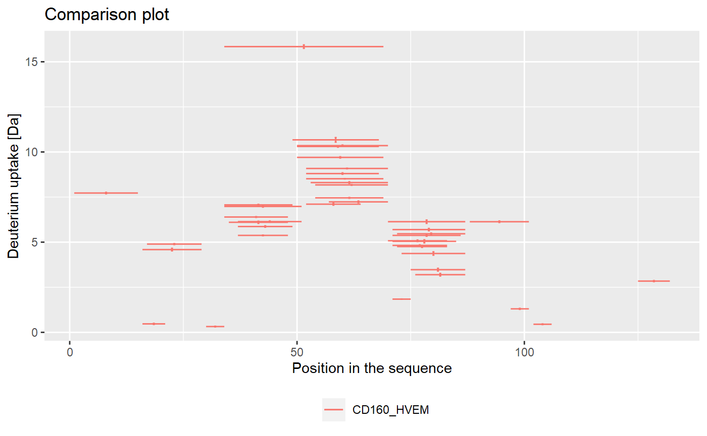
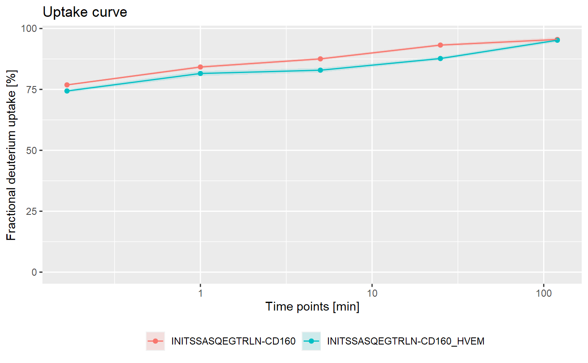
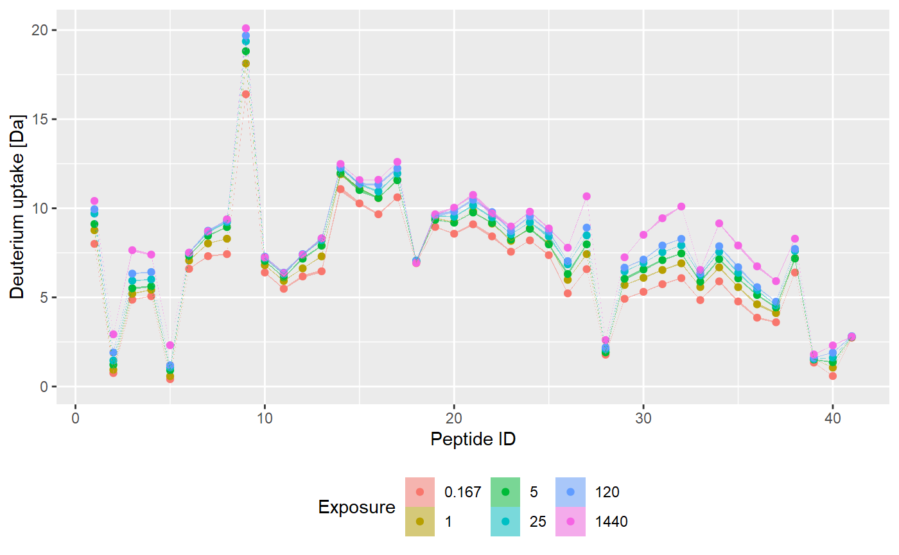
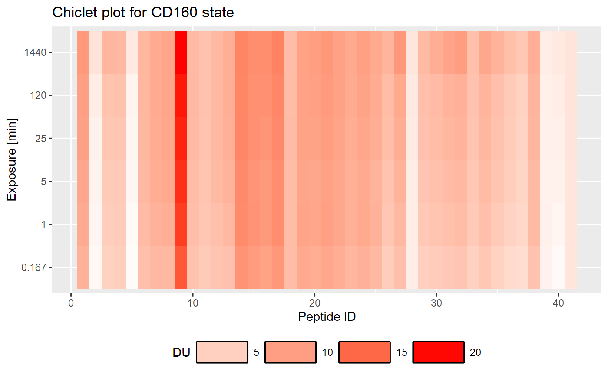

usage.RmdPurpose of groups of functions in the package:
Variables:
dat <- read_hdx(system.file(package = "HaDeX", "HaDeX/data/KD_180110_CD160_HVEM.csv"))## [1] ""
dat %>%
calculate_state_uptake(state = "CD160_HVEM") %>%
plot_state_comparison()
dat %>%
calculate_peptide_kinetics(protein = "db_CD160",
sequence = "INITSSASQEGTRLN",
start = 1,
end = 15,
states = c("CD160", "CD160_HVEM"),
time_0 = 0.001, time_100 = 1440) %>%
plot_kinetics(fractional = TRUE)
dat %>%
calculate_peptide_kinetics(protein = "db_CD160",
sequence = "INITSSASQEGTRLN",
start = 1,
end = 15,
states = c("CD160", "CD160_HVEM"),
time_0 = 0.001, time_100 = 1440) %>%
show_kinetic_data(fractional = TRUE)## # A tibble: 10 x 8
## Protein Sequence State Start End `Time Point` `Frac DU [%]`
## <chr> <chr> <chr> <int> <int> <dbl> <dbl>
## 1 db_CD160 INITSSASQEGTRLN CD160 1 15 0.167 76.9
## 2 db_CD160 INITSSASQEGTRLN CD160 1 15 1 84.2
## 3 db_CD160 INITSSASQEGTRLN CD160 1 15 5 87.5
## 4 db_CD160 INITSSASQEGTRLN CD160 1 15 25 93.2
## 5 db_CD160 INITSSASQEGTRLN CD160 1 15 120 95.5
## 6 db_CD160 INITSSASQEGTRLN CD160_HVEM 1 15 0.167 74.4
## 7 db_CD160 INITSSASQEGTRLN CD160_HVEM 1 15 1 81.5
## 8 db_CD160 INITSSASQEGTRLN CD160_HVEM 1 15 5 82.9
## 9 db_CD160 INITSSASQEGTRLN CD160_HVEM 1 15 25 87.7
## 10 db_CD160 INITSSASQEGTRLN CD160_HVEM 1 15 120 95.2
## # ... with 1 more variable: Err Frac DU [%] <dbl>Create data frame with uptake values for state in all time points:
uptake_dat <- dat %>%
create_state_uptake_dataset()Butterfly:
uptake_dat %>%
plot_butterfly()
Chiclet:
uptake_dat %>%
plot_chiclet()